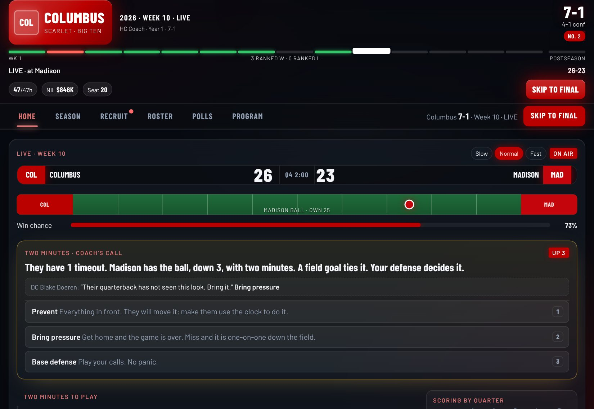
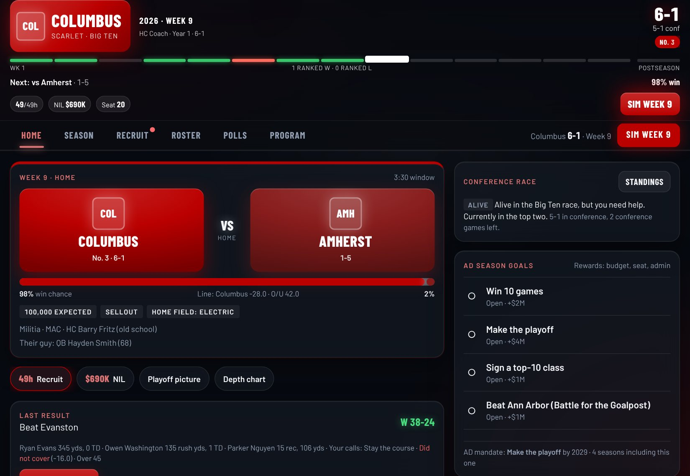
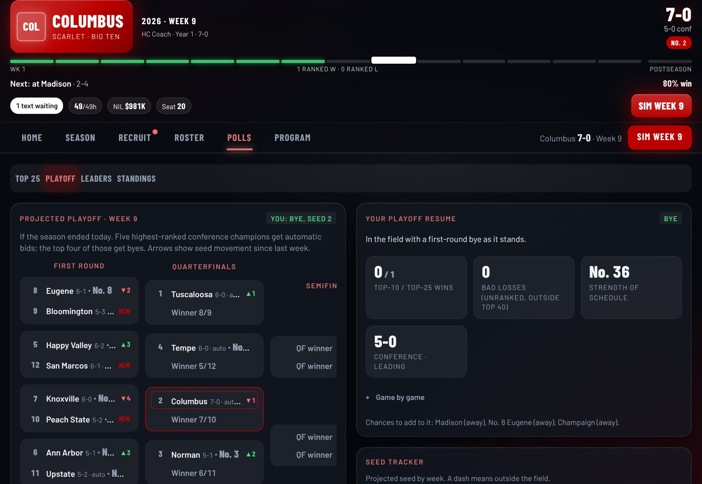
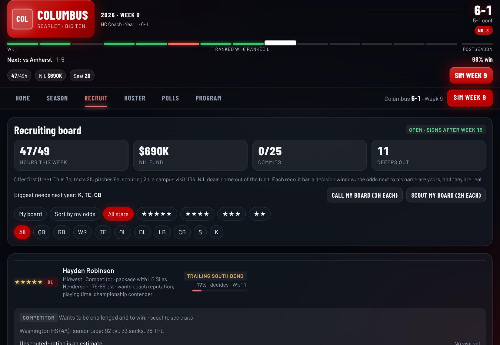

You run the program.
Not the plays.
Recruit the living room, build the two-deep, lobby the boosters, face the press, and make the three calls that decide every Saturday. Then do it again next year, with the whole country keeping score.
Free. No account. Saves on your device. Works offline once installed.
Everything but the playbook
A 136-school landscape with ten conferences, title games, a 12-team playoff with byes and on-campus first-round games, rivalries you have to earn, and a Heisman race driven by real production.
Win the living room
Text recruits, read their personality, pitch what they care about, answer the family at dinner on the visit. Package deals, flips, hat ceremonies on decision day, late signing periods and a NIL fund you raise yourself.
Watch it, then make the call
A drive-by-drive broadcast, a field that tracks the ball, weather, a swinging win-probability meter. At halftime, going to the fourth, and at the two-minute mark of a one-score game, the broadcast stops, your coordinators make their case in the headset, and you decide. Big games start in the locker room with your pregame speech.
Earned, never given
Ranked matchups, close finishes, upsets and revenge games build heat. Enough heat and the series gets a trophy and a week of its own. A veteran might guarantee a win on the radio. Then it is on you.
Face the press
After every game you pick an answer. Fans, the locker room, the athletic department and the media keep score, and it decides your hot seat and which jobs call.
Players are people
Traits, injuries, breakouts and busts. Coordinators with schemes that shape your game plans and your recruiting. Captains you name in August. Leaders hold a locker room together, flight risks hit the portal, late bloomers pop in camp. Redshirts, position battles, your own two-deep.
It lives without you
Named coaches with personalities and hot seats, midseason firings, a carousel every winter, nemesis coaches who own you, weekly committee rankings, a Monday power-rankings column, and a pregame show that picks the biggest game in the country.
Every move matters
Your agent calls about a bigger job midseason. TV wants Friday night. A backup's dad threatens the portal. The AD hands you a mandate with a deadline, then a vote of confidence. Talk radio wants your coordinator fired. A walk-on has earned a scholarship. Each answer ripples into next Saturday, the budget, the locker room and January.
December to camp
A portal window where your backups tell you they are leaving. NIL retention asks from agents. Bowl week plans. A coaching tree that follows your assistants to their head jobs. Job offers if you overachieved, a pink slip if you did not.
Build a legacy
Challenge starts (rebuild, title or bust, giant killer, hot seat), career splits, career stops, milestones, single-game and season records, a trophy case, a hall of fame, jersey retirement nights and the Heisman ceremony. Twenty seasons later, the field has your name on it.
Three calls that decide Saturday
The game plays on a broadcast you watch, and the box score always matches what you saw. In the biggest games it starts in the locker room with your pregame speech. The decisions are yours; the other sideline makes its own.

Stay the course, open it up, shorten the game, light into them
Read the scouting report, decide how the second half gets played. A banged-up starter at the break is your call too: play him or sit him.
Go for it, bleed the clock, prevent, send the house
Fifteen minutes to hold it or get it back. Your OC or DC tells you what they would do; a good one is usually right. Gamblers go for everything; old-school coaches run it and make you burn timeouts.
Air it out, work the sideline, set up the kick
One-score game, two minutes left. Your quarterback, your kicker, your timeouts and your coaching all shape the odds. Two-point tries, onside kicks, walk-off field goals and overtime flow from it.



How a season goes
Pick your program, your background and a challenge. Position battles and breakouts in camp. The AD hands you a mandate and a number.
Set the plan, spend recruiting hours, answer the midweek decision, then watch it play out and make your calls. End at the podium.
The standings tell you exactly what you need: clinched, in control, or "win and Bayou loses." Rivalry week closes it.
Title games, live. Your class signs. The Heisman goes out. Selection Sunday seeds the field.
Four rounds, one champion, confetti in your colors. Then departures, the portal, the carousel, and the phone.
Play with friends
Every coach runs their own program in the same league. The week does not advance until everyone has readied up.
One device, up to eight coaches
A handoff screen covers the device between turns. When two coaches play each other, both make the calls: pass the device at halftime and the fourth; in crunch time the coach with the ball picks the offense and the other picks the defense. Put a side bet on it before kickoff: NIL money, the recruiting trail, or the loser wears the winner's colors at the Monday presser.
Same league, different couches
Create a league, share the code, and every coach plays their own game live on their own device. Results sync, the league table on Home tracks records, class ranks, hot seats and head-to-head, and the week waits for the last coach.
Same school, same week, one score
Every Monday a new gauntlet: everyone gets the same program, league and recruits. Play one season, get scored on wins, titles, the playoff and your class, then copy the result into the group chat and settle it.
Get the game
Same game everywhere. The Windows app adds sound, screen effects, controller rumble, save export and one-click updates.
Play now, install later
Runs on desktop and phone. Progress saves in your browser, so keep using the same device and browser. On a phone, open it and use Add to Home Screen for a full-screen app that works offline. Multiple dynasties supported.
Play in browserThe desktop app
Unzip, open Saturday Sweater.exe. Windows may show a SmartScreen notice the first time since the app is not code-signed: choose More info, then Run anyway. Updates download in-app under Program > Save and settings.
Download .zipWindows 10 or 11, 64-bit. About 110 MB.
What's new
The game ships often. The latest updates, straight from the changelog.
From the mailbag
Are these real schools?
No. The league ships with 136 fictional programs that mirror a modern conference landscape. The League Editor lets you rename anything, and a league file can be shared with friends and imported in one paste.
Where is my save?
In the browser version, in that browser's local storage. In the Windows app, in your Windows user profile; File > Export save writes a backup file you can move to another PC. You can keep several dynasties and switch between them.
How do updates work?
The browser version is always current, and a What's new card on Home lists what changed since you last played. The Windows app checks for updates under Program > Save and settings and reloads without touching your saves.
Is it hard?
Taking over a 10-prestige program is a title-or-bust job, and ranked teams get everyone's best shot. A 2-star program is a five-year project with a lot of losing in year one. Three losing seasons in a row and you are fired. Both are the point. Challenge starts make it harder on purpose.
Why "Sweater"?
Sweating the games. If you have ever watched a fourth quarter through your fingers, you already know.